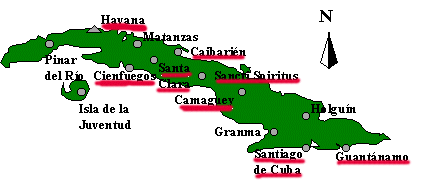
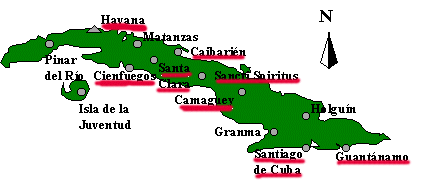

Jewish Communities in Cuba  Population estimates are taken from various sources. City Number Havana 1,200 Cienfuegos 30 Santa Clara 30 Camagüey 140 Santiago de Cuba 90 Guantánamo 70 Caibarien 30 Sancti Spiritus 40 Granma 43 Home Contents Photos
